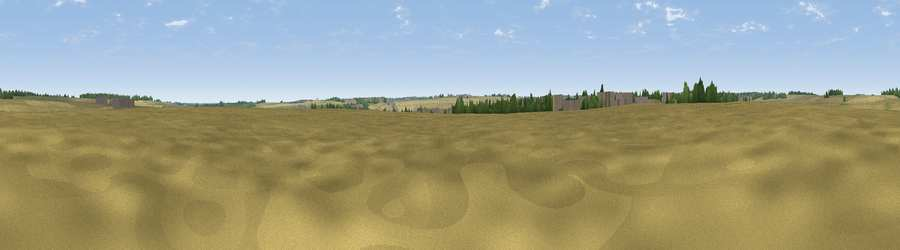

Viewpoint near Tickencote
#45898 in England · top 97% of its area beats it · near Tickencote · access?Where it is
The exact computed spot (SK 99324 10052). Click the marker for map links.
Public access: no public right of way or access land is recorded at this exact spot — it may be on private land. Computed from Natural England's CRoW access layer and OpenStreetMap rights of way — not the legal definitive map. Always verify locally.
The view, rendered

A 360° render of this exact spot computed from the terrain model, tree cover and land cover — summer colours, afternoon light, calibrated against photographs of famous viewpoints. Real trees, hedges and buildings will differ in detail.
The panorama
Grey silhouette: terrain skyline in each direction (720 bearings, Earth curvature and refraction included). Dashed green: skyline with trees (+15 m) and buildings (+8 m) as obstacles. Blue strip: how far the ground is visible on each bearing.
Where the view opens
Wedge length = distance to the farthest visible ground on that bearing (vegetation-aware). Rings at 10, 25 and 50 km.
What fills the view
86% cropland · 9% grassland · 4% woodland · 1% built-up
Angular shares of the visible panorama (visual magnitude), not map area. Landscape diversity 0.23 (0–1 Shannon).
Key numbers
More beautiful places nearby
The staircase of upgrades: each row has a higher view potential than everything closer. Driving times are estimates from straight-line distance, calibrated against real road routing — check an actual route before setting out.
| Place | Direction | Drive | Score |
|---|---|---|---|
| Viewpoint near Little Casterton | NE · 2 km | ~6 min | 25.7 |
| Viewpoint near Whitwell | W · 8 km | ~16 min | 29.8 |
| Viewpoint near Burley on the Hill | W · 11 km | ~21 min | 30.6 |
| Viewpoint near Toft | NE · 11 km | ~21 min | 47.9 |
| Viewpoint near Rockingham | SW · 22 km | ~36 min | 48.7 |
| Viewpoint near Owston | W · 22 km | ~37 min | 49.9 |
| Viewpoint near Pickwell | W · 22 km | ~37 min | 57.3 |
| Viewpoint near Burrough on the Hill | W · 23 km | ~38 min | 63.4 |
52.67908, -0.53230 · source: osm peak · position refined by local search. Computed location — check access rights before visiting.